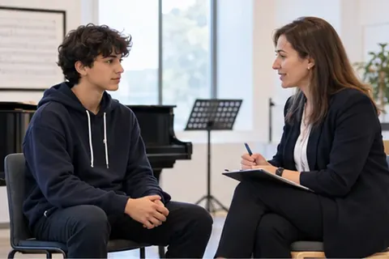

01
Başlangıç Profilini Belirliyoruz
Her öğrencinin yetenek düzeyi, fiziksel özellikleri, teknik kapasitesi ve gelişim potansiyeli başlangıçta ayrıntılı biçimde değerlendirilir.

Akademik, sosyal ve kişisel gelişimi bir arada ele alan bütüncül bir gelişim yol haritası.
Gelişim Yolculuğunu Keşfet ↗Sürekli gelişim
↗Sürekli gelişimHer öğrenci için kişiye özel gelişim verileri; eğitim, deneyim ve uzman değerlendirmesiyle birlikte ele alınır.
Her öğrencinin ilerlemesi planlanır, ölçülür ve geleceğe taşınır.